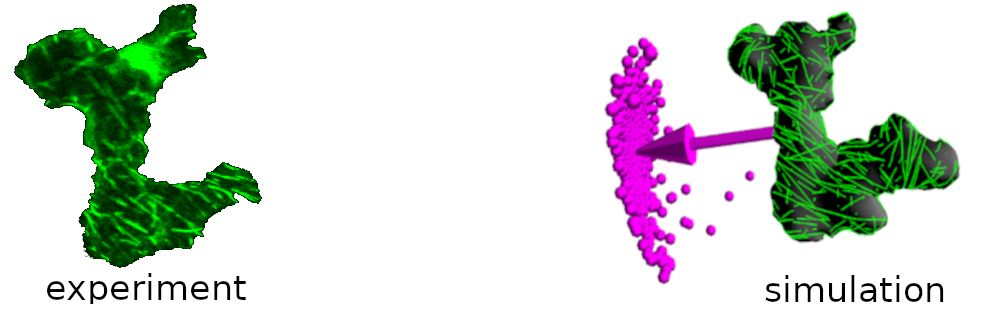

Quick Start
corticalsim3D (cortical microtubule dynamics)

CorticalSim is a simulator for cortical microtubule dynamics (CMT) on experimentally extracted microscopic images of cells.
Application:
https://www.sciencedirect.com/science/article/pii/S0960982218309242
https://journals.plos.org/ploscompbiol/article?id=10.1371/journal.pcbi.1005959
Note
Testing and contributing is very welcome, especially if you can contribute with new algorithms and features.
Installation
Currently, corticalsim3D depends on Eigen and Boost (although the latter is planned for removal as a dependency). These dependencies are managed automatically by Meson, which is also used to build the executables. You do need a fairly recent C++ compiler (GCC or Clang) supporting the C++ 17 standard. The following instructions outline the process of installing the core dependencies on different platforms, as well as compiling and installing corticalsim3D itself.
Linux
The dependencies are handled by Meson, so the only packages that you need to install manually are GCC, Meson, Ninja and CMake.
Ubuntu
sudo -- sh -c 'apt update && apt upgrade && apt install gcc meson ninja-build cmake'
Arch
sudo pacman -Sy gcc meson ninja cmake
Windows
MSYS2
MSYS2 is a platform that allows you to install development toolchains.
Download and install MSYS2 (follow the instructions on the main page).
Launch the
MSYS2 UCRT64shell from the system menu.Install the UCRT64 versions of the necessary tools:
pacman -S mingw-w64-ucrt-x86_64-{gcc,meson,cmake,ninja,pkgconf}
You can now move on to the instructions on how to compile CorticalSim. Please note that you should use the MSYS2 shell (the one you launched in step 2 above), not the default Windows command shell or PowerShell.
Compilation
First, clone the corticalsim3D repository and enter the repository root:
git clone https://github.com/corticalsim/corticalsim3D
cd corticalsim3D
Build script
You can use the build script located under the scripts directory:
./scripts/build.sh
The script will create a build directory for the default build type (release). The script supports the following arguments:
Option |
Description |
Default |
|---|---|---|
|
Reconfigure the build directory. This option is passed on to |
- |
|
Clean the build directory before compiling. This option is passed on to |
- |
|
Specify the build type to use. Valid options are |
|
|
Specify a custom build directory. Please note that in any case the actual build directory will be |
|
Manual build
Alternatively, you can run all the setup and compilation steps manually by following the steps below:
Run the setup to configure the build:
mkdir -p build/release
meson setup build/release . --buildtype release"
This command uses the Meson build system to bootstrap everything that we need for the compilation into a directory called build/release from the sources located in the current directory.
NOTE: The possible options for the --buildtype switch are plain, debug, debugoptimized and release. Please check the Meson documentation page on configuring the build directory for information about the meaning of each of these options. We default to release here.
Different build types should go in their own directory, so if you would like to build corticalSim with debug symbols, first you should create a subdirectory for that build:
mkdir -p build/debug
meson setup build/debug . --buildtype debug
Compile the source by passing the relevant directory via the
-Cswitch.
meson compile -C build/release
This will generate an executable file called corticalsim3d in the build directory (e.g., build/release).
NOTE: If you are using a very old Meson version (e.g., <0.54.0), you need to use ninja instead of meson, with a slightly different syntax:
ninja -C build/release
Run
Run the corticalsim3d executable from the build directory with the ./config/parameters_ARRAY.txt parameter file as the first argument:
./<path-to-build-directory>/corticalsim3d ./config/parameters_ARRAY.txt
NOTE: The parameter file has some hardwired path variables. As a result, currently you must run corticalsim3d from the repository root, regardless of where the build directory is located. This is relevant if you have used the --builddir option.
If the program runs correctly, it should print some statistics about the run. For instance, with a debug build:
...
Division plane area: 72.097664
corticalSim vBC.2018
Total running time: 8 seconds.
stochastic events: 1784, deterministic events: 56882.
Compare this with the release build (should be much faster):
...
Division plane area: 72.097664
corticalSim vBC.2018
Total running time: 3 seconds.
stochastic events: 1784, deterministic events: 56882.